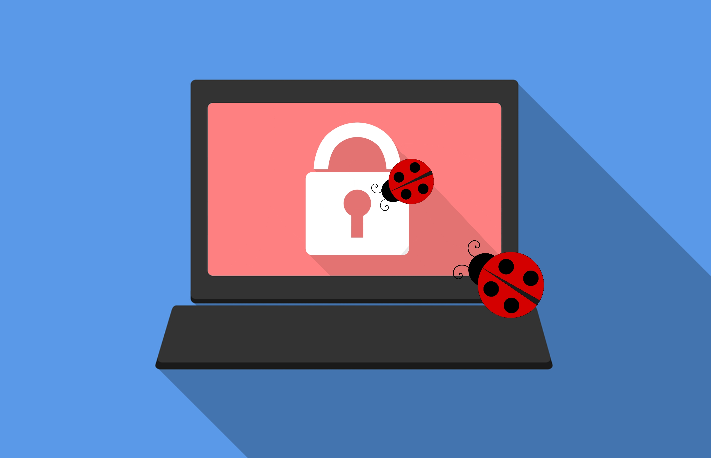
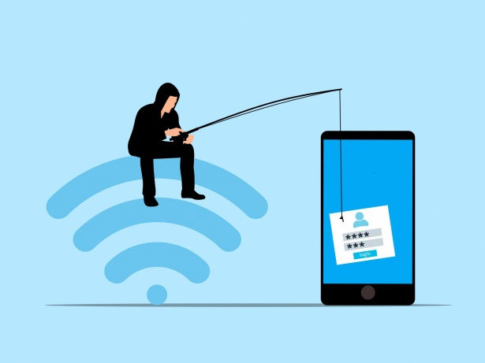
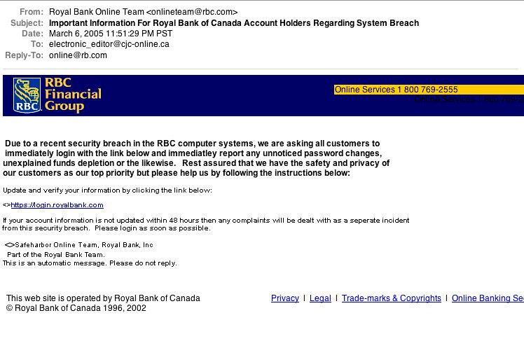

We have already spoken about the risks of having weak passwords and the potential damage cyber criminals can cause by breaking into an account. However, this is not the only part of online security.
On this page, we will discuss the importance of
The first thing someone might think of after account security is the security of their devices. Malware, or a 'virus' as commonly known, is computer code that inserts itself into programs and files on a device in order to complete malicious actions on your device. This could be stealing your information to log into your accounts or deleting your files. Some can be as small as stealing small pieces of the processing speeds of your device to use for themselves. [1]
In order to stop malware from affecting you, there are a few security rules to keep in mind. The most important one is to have an antivirus operating on your machine. These don't stop viruses from entering in all cases, but will 'quarantine' them from destroying your machine. You do not need anything special. If you are using a Windows computer, then Windows Defender is genuinely all you need. Some service providers, like Norton, can offer paid security services. These are great quality but are usually only necessary in particularly bad circumstances, such as if you are downloading a lot of risky programs. [2]
The next security protocol is to make sure you do not click
If your device is infected by malware, and the antivirus is a having a very hard time getting rid of it, then it is recommended you backup useful files and restore your computer from factory settings. It can be very problematic to host malware on your PC even if it seems ok for right now.
Phishing has been talked about throughout our website. It is when scammers attempt to elicit sensitive data or actions from a victim. This is usually by manipulating the user and seeming official or using cheap tricks. It can also happen by consistent communication with the customer to build trust. It is never good to trust someone online enough to give money or personal information to them. The business of scamming is lucrative and is carefully curated to trick you. [5]
Below I will list all the possible phishing scams I have seen working for Microsoft:
A business email like Microsoft asks you to input your password to 'validate your account' or the account will be deleted. The best thing to remember is that it is a security standard to never ask this from a user. If you need to update your password or check your log-in activity, you should do it directly from the security website. They will also never have an email with an 'urgent!' warning.
A person send you a bunch of details about your account, like passwords. They also tell you they have sent this from your own email, which you can confirm. The best thing to remember is that emails are easily spoofed. (Make the email look like it was sent from somewhere else) Also, they can find this information from leaks and don't actually have access to your account. I would always recommend scanning your computer regularly for viruses and checking your activity pages for your email addresses. If you do both of these, there is no way it could be a real criminal in your account. NEVER give them what they are asking. This is known as extortion and is a serious crime. If someone is extorting you with legit means, do not contact support, contact your local police.
A company sends you an email requesting you to log-in to their site or call their phone number. As said before, emails can be spoofed. There also many tools that can make websites look the same as official websites. Never trust them. Always log-in from your own browser searches and call from the 'Contact Us' page.
A threatening call comes to your phone number saying you owe or are owed money. They might even give your name. This is also a scam. Especially, do not let
Here is an example [10]:
 What is the takeaway?There are many different forms of AI. Some are 'simple', in that they are very very specialised to one field. For example, some AI's are used to crack passwords in a faster and better way than the normally used programs. Whilst generative AI's like ChatGPT can be used for a lot larger intentions - such as powerful
AI bots built to deceive and steal from users have already been produced such as
AI will also help the ease-of-access for low-level criminals to figure out how to produce more effective campaigns and hacking tools.[8] The more AI develops the more extreme these cases will become.
AI is also used to protect you. AI is used in your filters to remove phishing attacks and is also used to protect against fraud in banking. The development of AI systems is important in many ways, but it is also essential to understand the risks.
Eye catching right?
The ILOVEYOU virus is an infamous